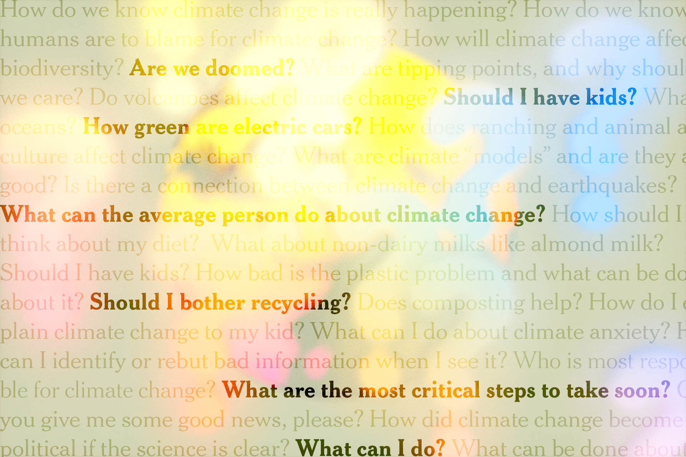
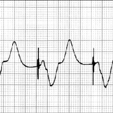

All speakers have a degree of nervousness. A professional speaker with experience has a heightened level of excitement before a presentation. If nervousness is obvious, listeners can be distracted and miss the point.
Why is the first skill needed in performing a speech poise?
“Easy, self-possessed assurance of manner… pleasantly tranquil.”
The key to performing a speech is to appear calm and assured even when we may not feel remotely close to it.
The breakthrough for students here, initially, was that poise is a skill — it's a thing you can learn, practice, and improve.

